Accepted to EMNLP 2026 Main Conference
Credit assignment is the missing piece in self-evolving multi-agent LLM systems.
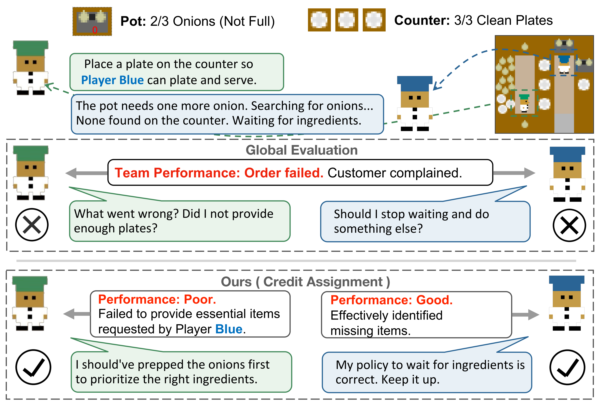
Large language model (LLM) agents struggle to autonomously evolve coordination strategies in dynamic environments, largely because coarse global outcomes obscure the causal signals needed for local policy refinement. We identify this bottleneck as a multi-agent credit assignment problem, which has long been studied in classical multi-agent reinforcement learning (MARL) but remains underaddressed in LLM-based systems.
Building on this observation, we propose LangMARL, a framework that brings credit assignment and policy gradient evolution from cooperative MARL into the language space. LangMARL introduces agent-level language credit assignment, pioneers gradient evolution in language space for policy improvement, and summarizes task-relevant causal relations from replayed trajectories to provide dense feedback and improve convergence under sparse rewards.
Extensive experiments across diverse cooperative multi-agent tasks demonstrate improved sample efficiency, interpretability, and strong generalization. Our code is available at github.com/DaRL-GenAI/LangMARL, with a tutorial at langmarl-tutorial.readthedocs.io.
Most multi-agent LLM systems rely on hand-engineered prompts and static configurations, so agents cannot evolve their strategies as the task distribution shifts. When these systems do try to self-improve, they optimize against a single global outcome — a team-level success or failure — through global reflections or monolithic prompt rewrites. That signal simply is not informative enough: it never says which agent needs adjusting, which leads to inefficient learning or outright coordination collapse.
Classical MARL solved exactly this problem decades ago, with counterfactual baselines, value decomposition, and the centralized training, decentralized execution (CTDE) paradigm. But those tools assume numeric gradients over differentiable parameters. LLM agents are black boxes whose "parameters" are natural-language instructions. LangMARL closes that gap by re-deriving each MARL component in language space.
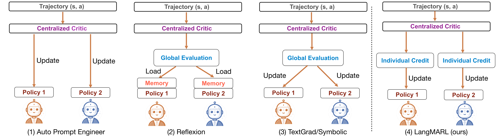
| Method | Self-Evolving | Central Critic | Text Gradient | Credit Assignment |
|---|---|---|---|---|
| Static Prompting | ||||
| CoT | ✗ | ✗ | ✗ | ✗ |
| Agents | ✗ | ✗ | ✗ | ✗ |
| Single-Agent Self-Evolving | ||||
| AutoPE | ✓ | ✓ | ✗ | ✗ |
| DSPy | ✓ | ✗ | ✗ | ✗ |
| Reflexion | ✓ | ✓ | ✗ | ✗ |
| TextGrad | ✓ | ✓ | ✓ | ✗ |
| Multi-Agent Self-Evolving | ||||
| Agent Neural Network | ✓ | ✓ | ✓ | ✗ |
| Symbolic Learning | ✓ | ✓ | ✓ | ✗ |
| LangMARL (ours) | ✓ | ✓ | ✓ | ✓ |
Comparison across prompting and self-evolving paradigms. LangMARL unifies self-evolution, centralized critique, and explicit credit assignment.
LangMARL follows a language CTDE loop. During training, a centralized critic sees the full episodic trajectory and attributes the outcome to individual agents in natural language. At execution time, each agent acts alone from its own language policy, with no access to global state or feedback. Four components mirror the standard actor–critic stack:
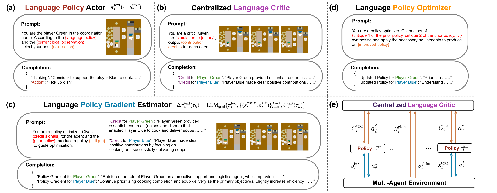
LangMARL is packaged so that building an LLM multi-agent optimizer feels like writing a standard deep-RL pipeline. The abstractions map one-to-one onto familiar MARL library components — only the underlying representation changes from tensors to text.
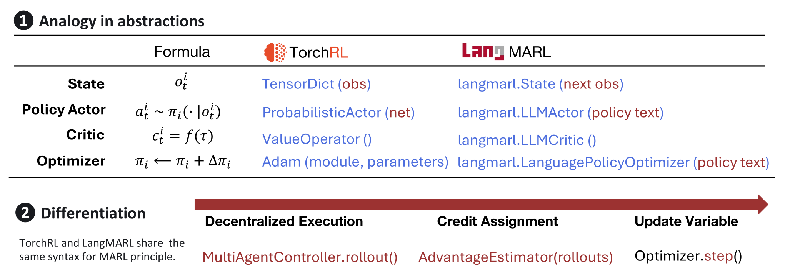
TensorDict becomes langmarl.State,
ProbabilisticActor becomes langmarl.LLMActor, ValueOperator becomes
langmarl.LLMCritic, and Adam becomes
langmarl.LanguagePolicyOptimizer. Rollout, credit assignment, and the optimizer step keep the
same syntax as classical MARL.
We evaluate on two families of environments: cooperative language tasks (HotPotQA, MATH, HumanEval, reframed as multi-agent RL problems) and strategic games with fixed roles and physical constraints (Overcooked-AI and Pistonball). LangMARL achieves the best result on every benchmark, against both static prompting and self-evolving baselines.
| Method | CoT | Agents | AutoPE | DSPy | Reflexion | TextGrad | Symbolic | LangMARL |
|---|---|---|---|---|---|---|---|---|
| Natural Language Benchmarks (Accuracy / Pass Rate) | ||||||||
| HotPotQA | 38.8 | 37.5 | 39.8 | 43.9 | 59.1 | 57.3 | 44.8 | 60.2 |
| MATH | 23.2 | 23.8 | 22.5 | 17.3 | 49.4 | 53.8 | 38.8 | 56.0 |
| HumanEval | 59.2 | 59.5 | 63.5 | 66.7 | 70.1 | 68.9 | 64.5 | 73.2 |
| Overcooked-AI (Mean Reward) | ||||||||
| Forced Coord. | 73.3 | 68.4 | 71.9 | 62.1 | 138.5 | 85.3 | 104.2 | 148.9 |
| Coord. Ring | 140.0 | 122.3 | 133.4 | 141.4 | 157.8 | 163.8 | 148.5 | 184.4 |
| Counter Circuit | 40.0 | 43.6 | 38.2 | 52.4 | 68.7 | 54.5 | 55.1 | 77.8 |
| Asymm. Adv. | 226.7 | 202.7 | 143.5 | 217.3 | 204.1 | 230.6 | 232.4 | 244.4 |
| Cramped Room | 126.7 | 118.5 | 122.8 | 145.7 | 151.1 | 131.3 | 147.5 | 171.4 |
| Pistonball (Mean Reward) | ||||||||
| N = 10 | -0.9 | 11.6 | 5.8 | 20.0 | 23.7 | 33.5 | 21.1 | 37.2 |
| N = 12 | -0.1 | -2.7 | -0.8 | 7.8 | -6.2 | 24.3 | 3.1 | 29.6 |
| N = 16 | -8.5 | -1.0 | -3.1 | -0.9 | 8.9 | 10.1 | -7.6 | 17.2 |
| N = 20 | -11.5 | -3.8 | -6.2 | -7.3 | -1.2 | 14.3 | 3.3 | 22.9 |
Mean performance after 5 training iterations with the same backbone LLMs (GPT-3.5-turbo for language benchmarks, GPT-4o-mini for games). Notably, LangMARL keeps stable positive returns as the Pistonball team scales to N = 20, where baselines such as TextGrad degrade.
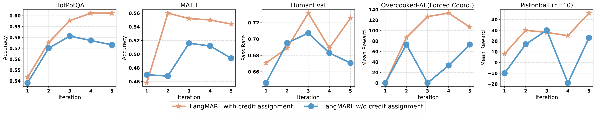
We asked human annotators to identify the agent primarily responsible for the outcome across 70 Overcooked-AI trajectories (14 per layout). The critic's top attribution matched human judgment on 89.9% of trajectories, reaching 100% on Forced Coordination, where responsibility is unambiguous. This is direct evidence — independent of downstream task performance — that the critic captures real causal responsibility.
| Metric | Forced Coord. | Coord. Ring | Counter Circuit | Asymm. Adv. | Cramped Room |
|---|---|---|---|---|---|
| Human agreement | 100.0% | 85.7% | 92.9% | 78.6% | 92.9% |
Human verification of credit assignment quality on Overcooked-AI.
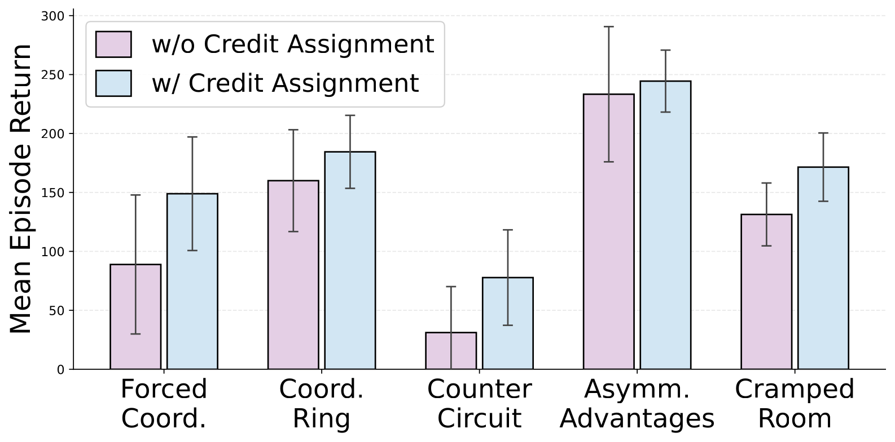
| Layout | w/o Credit | w/ Credit | Δ |
|---|---|---|---|
| Forced Coord. | 82.7 ±61.1 | 148.9 ±48.1 | +66.2** |
| Coord. Ring | 160.1 ±40.3 | 184.4 ±30.9 | +24.3** |
| Counter Circuit | 30.9 ±36.4 | 77.8 ±40.4 | +46.9*** |
| Asymm. Adv. | 227.3 ±59.8 | 244.4 ±26.2 | +17.1 |
| Cramped Room | 128.6 ±29.1 | 171.4 ±28.9 | +42.8*** |
*** p < 0.01, ** p < 0.05, * p < 0.10.
Because credits are asymmetric — the critic praises one agent and corrects another — optimization pressure breaks the initial symmetry between identically-prompted agents. Over five epochs of collaborative coding, two generic problem solvers self-organize into complementary roles: Agent 1 specializes in structured implementation, Agent 2 in critical review and refinement. No role was ever specified in the prompt.
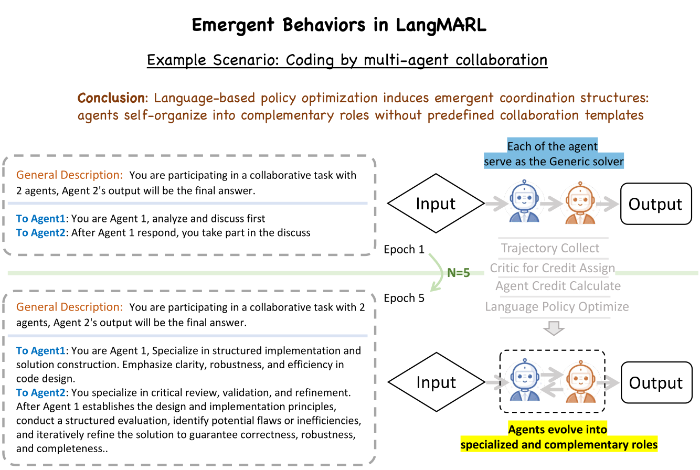
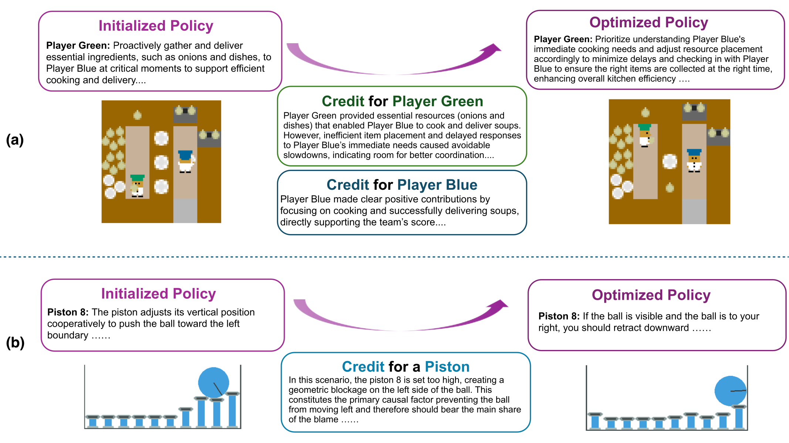
LangMARL is backbone-agnostic. Across GPT-4o-mini, Gemini-3-Flash, and the open-weight LLaMA-3.3-70B, it beats the strongest baseline on both Coordination Ring and Forced Coordination — Gemini-3-Flash gives peak performance, while LLaMA-3.3-70B stays competitive.
Rollout budget behaves differently with scale. On few-agent tasks like HumanEval, more rollouts monotonically help. In large Pistonball teams the gain plateaus: beyond a point, extra rollouts amplify policy bias rather than coverage, so there is an optimal rollout frequency that shrinks as agent density grows.
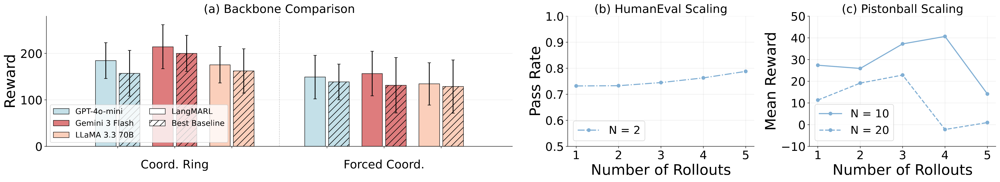
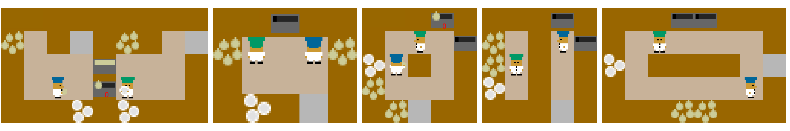
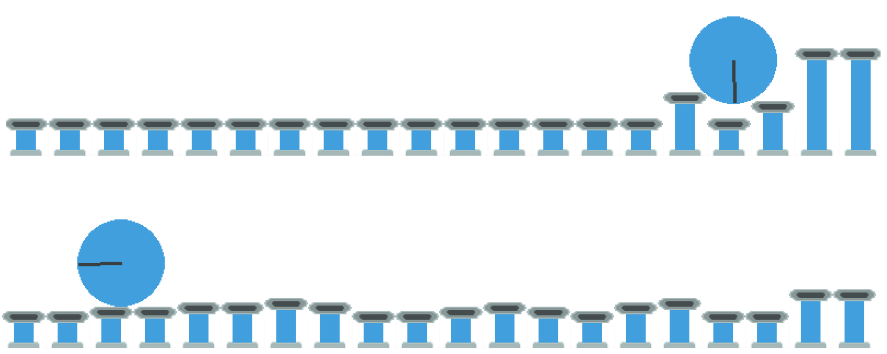
Long-horizon agentic tasks. In workflows spanning hundreds of steps, such as autonomous software development, sparse rewards and error propagation attenuate the causal link between an intervention and the final outcome. Hierarchically decomposing long trajectories into semantic sub-goals would let the critic give more granular feedback.
Dynamic sub-agent synthesis. LangMARL currently operates over a pre-defined agent topology. We are working toward on-the-fly synthesis of specialized sub-agents, with dynamic task partitioning and evolving communication protocols.
From policies to skills. LangMARL optimizes each agent's policy text. MASkills extends the same language-space policy-gradient view to a richer unit of procedural knowledge — reusable, transferable agent skills.
@inproceedings{yao2026langmarl,
title={LangMARL: Natural Language Multi-Agent Reinforcement Learning via Semantic Credit Assignment},
author={Yao, Huaiyuan and Da, Longchao and Liu, Xiaoou and Fleming, Charles and Chen, Tianlong and Wei, Hua},
booktitle={Proceedings of the 2026 Conference on Empirical Methods in Natural Language Processing (EMNLP)},
year={2026},
url={https://github.com/DaRL-GenAI/LangMARL},
}